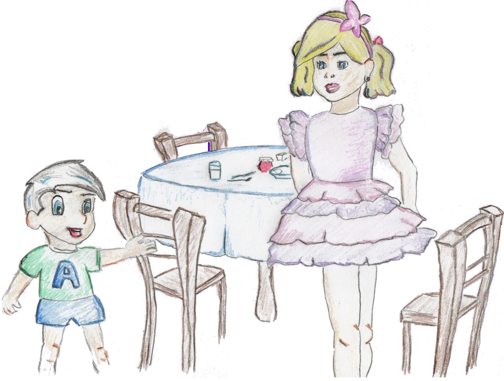
Rossita era una niña de seis años muy especial. Era delgada y alta, rubia y con los ojos marrones. Tenía un hermano al que le habían diagnosticado que era celíaco al poco tiempo de nacer.
Andrés, el hermano de Rossita, tenía tres años y ya comía prácticamente de todo, todo menos las cosas que tenían gluten.
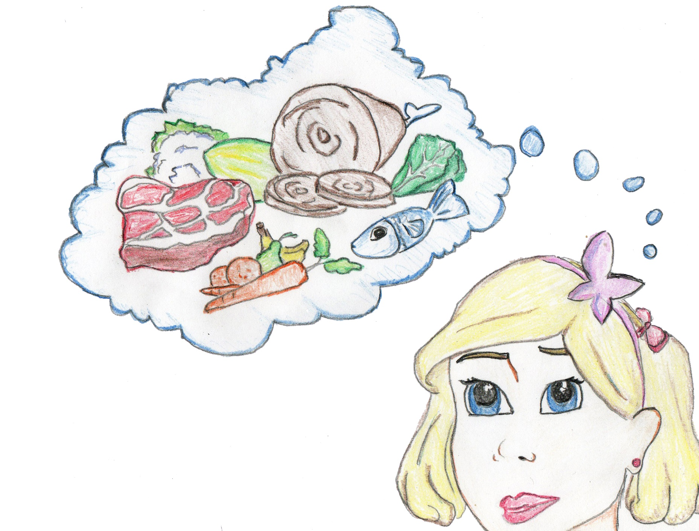
Al principio Rossita le preguntaba mucho a su mamá que en dónde se encontraba el gluten.
Su madre le decía que el gluten no estaba en los alimentos naturales (como carnes, pescados, leche, frutas, verduras) siempre y cuando no estuviesen procesados o elaborados, ya que pueden contener gluten. Pero en todos los demás lo llevaba, o los podía llevar.
—¿Gluten? ¿Pero eso qué es?
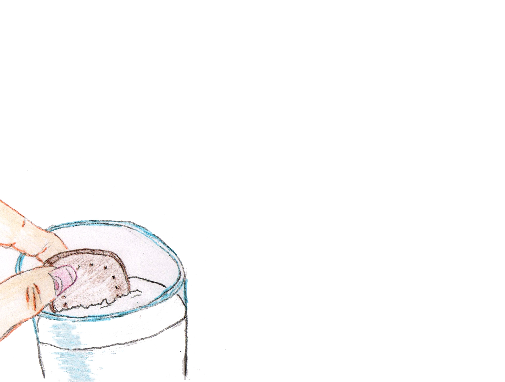
—El gluten es una proteína que se encuentra en los cereales como el trigo, la avena, el centeno, la malta…
—¿Y en esto mamá? —Le dijo levantando una galleta que estaba mojando en su vaso de leche.
—Sí hija, esa galleta es de trigo. Andrés tiene galletas pero son de maíz, que junto con el arroz es uno de los cereales que no tiene gluten.
Su madre se levantó de la mesa donde estaba ya casi todo preparado para desayunar, fue a un armario y sacó las galletas sin gluten para Andrés.
—¿Y la mermelada puede comerla? —Dijo mientras untaba mermelada de fresa en la galleta.
—Sí, es uno de los alimentos genéricos.
—Andrés, ¿quieres un poco? —Le dijo a su hermano que estaba sentado enfrente suyo.
Andrés afirmó con la cabeza y su hermana cogió una de las galletas sin gluten que su madre había dejado en la mesa.
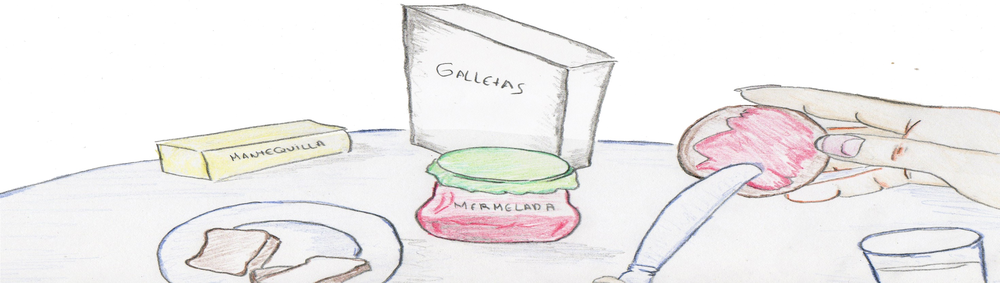
—No, así no lo hagas —dijo la mamá de Rossita al ver cómo untaba la galleta sin gluten de mermelada.
—Si es una galleta de las que Andrés puede comer y la mermelada es sin gluten —dijo la niña un poco desconcertada.
—Ya, pero estás usando nuestra mermelada y un cuchillo que se contaminó al untarlo con nuestras galletas.
Rossita se quedó inmovilizada y no supo cómo actuar.
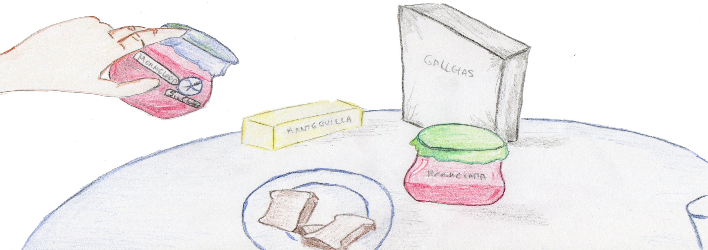
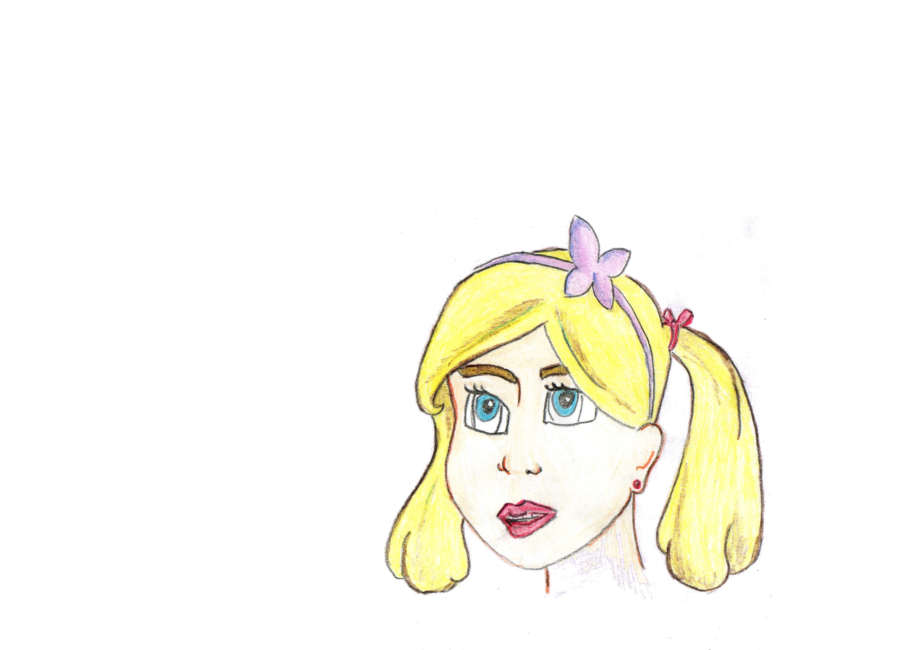
—No te preocupes —dijo al ver la cara de preocupación de su hija.
La mamá de Rossita fue a la nevera, cogió un tarro de mermelada que tenía una pegatina con el nombre de su hijo, cogió un cuchillo limpio, se sentó y comenzó a untar la mermelada en la galleta sin gluten.
—Cómete esa tú, Rossita.
—Pero, ¡es sin gluten!
—Ya, pero tú también comes cosas sin gluten, la leche por ejemplo.
—Sabe un poco diferente —dijo después de dar un mordisco a la galleta—. Con leche sabe mucho mejor —dijo tras mojar la galleta en el vaso y comérsela entera.
Gracias a su hermano, Rossita, que ya iba haciéndose mayor, aprendió muchas cosas sobre la enfermedad celíaca. Entre esas cosas, que es una enfermedad crónica y que durante toda la vida su hermano tenía que seguir una dieta estricta, ya que si comía gluten se ponía muy malo, hasta el punto de estar ingresado en el hospital muchos días, como ya le había pasado en varias ocasiones.
Por eso Rossita tenía mucho cuidado a la hora de hacer la comida. Primero siempre cocinaba los alimentos sin gluten para evitar una posible contaminación cruzada. Cuando cocinaba cosas a la vez, siempre lo hacía en cazos separados y utilizando cucharas distintas para remover.
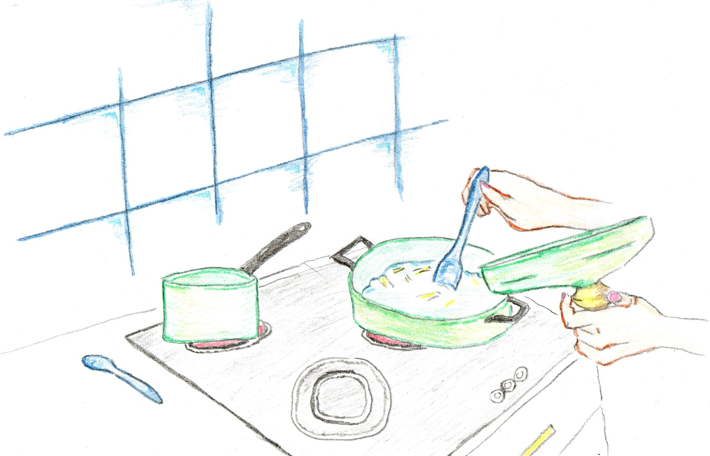
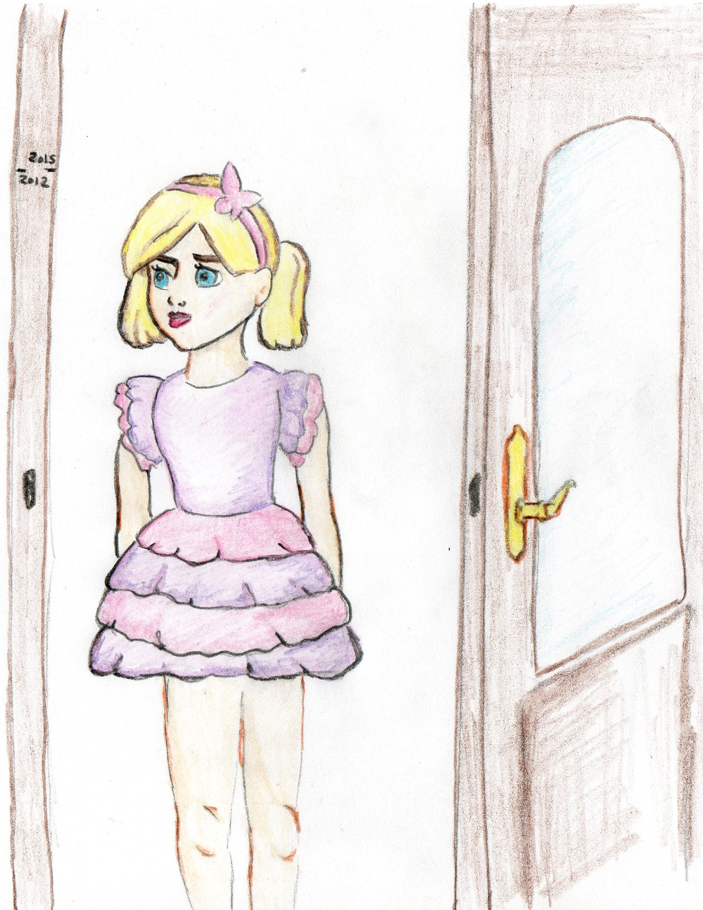
El tiempo fue pasando… meses, años y Rossita no crecía ni engordaba. Se había quedado en la misma altura desde los siete años y ya tenía casi diez.
Ella se encontraba bien, pero sus padres estaban preocupados al ver cómo su hijo Andrés crecía fuerte y sano, mientras que Rossita, que había sido una niña muy feliz un tiempo atrás, ahora estaba desganada y no le apetecía comer, jugar ni cantar.
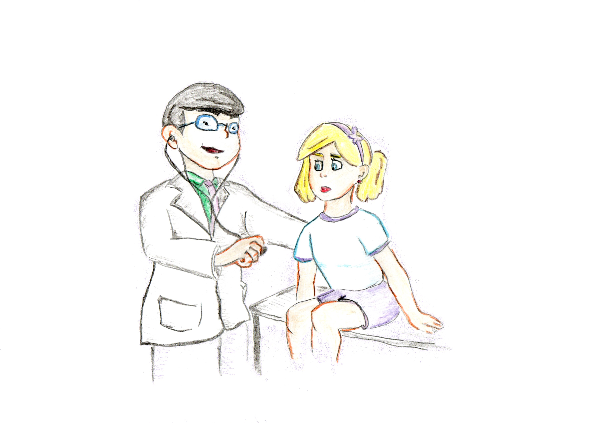
Un jueves los padres de Rossita decidieron llevarla al médico, y como el doctor sabía que su hermano era celíaco decidió hacerle unas pruebas; primero en sangre, que dieron positivas, y después le hicieron una gastroscopia.
Fue todo muy rápido y a los pocos meses ya estaban otra vez en la consulta del doctor.
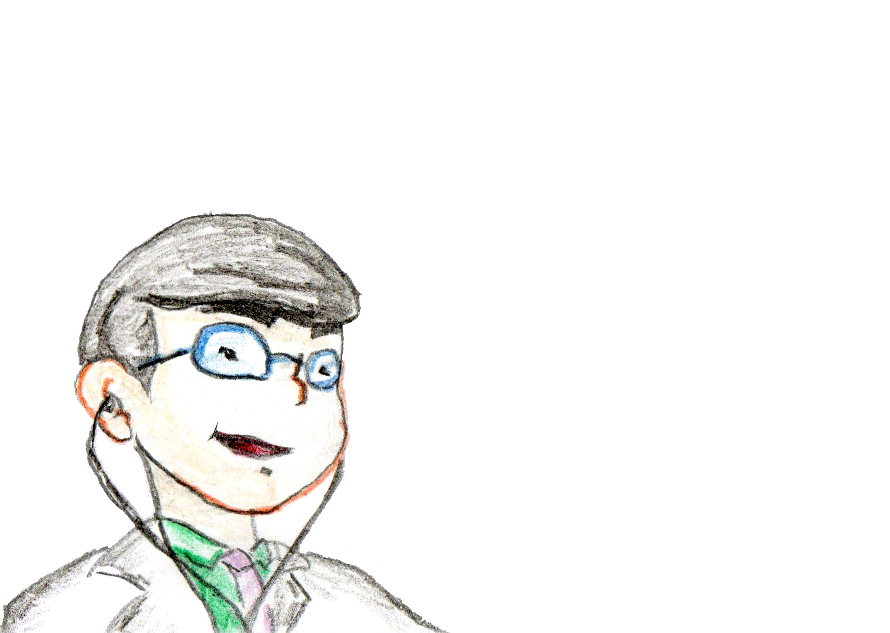
—¿Qué tal Rossita? —Dijo el médico con una sonrisa dibujada en su cara—. ¿Has tenido dolores abdominales, en la tripa, o en alguna parte de tu cuerpo? —Le dijo tocando su barriga.
—No —Le respondió la niña.
—No se queja de que le duela nada —continuó la madre—, sólo que sigue muy desganada sin ganas de comer y sigue sin crecer.
—Ya —afirmó el doctor volviendo a su mesa—. Bueno Rossita, tú vas a tener que tener mucho más cuidado que Andrés a partir de ahora.
La niña miró a sus padres desconcertada.
—Eres celíaca como tu hermano. Pero a diferencia de Andrés, que si come algo se pone malo en seguida y se da cuenta, tú Rossita eres celíaca asintomática.
Si coméis algo con gluten ambos os pondréis malos, aunque tú no lo notes externamente. Dentro de tu intestino hay unas vellosidades que son las que se encargan de absorber los nutrientes de los alimentos. Cuando comes gluten se van cortando y atrofiando y a la larga tendrías problemas graves de salud…
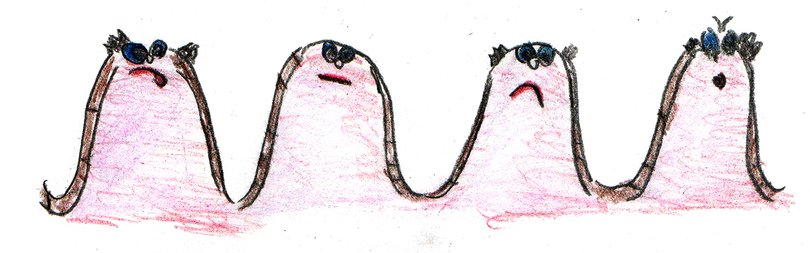
Al principio los padres de Rossita escuchaban atentamente hablar al doctor, y cuando acabó comenzaron a hacerle miles de preguntas. Lo bueno era que, como ya tenían la experiencia de Andrés, estaban, por una parte, aliviados de saber que a su hija lo que le pasaba era eso y no otras cosas peores.
Rossita comenzó su dieta estricta sin gluten y aunque en unos pocos meses volvió a sentirse como antes, con más energía y con ganas de jugar y volver a cantar, no fue hasta dos años después cuando recuperó por completo el estado anterior de sus vellosidades atrofiadas por el gluten.
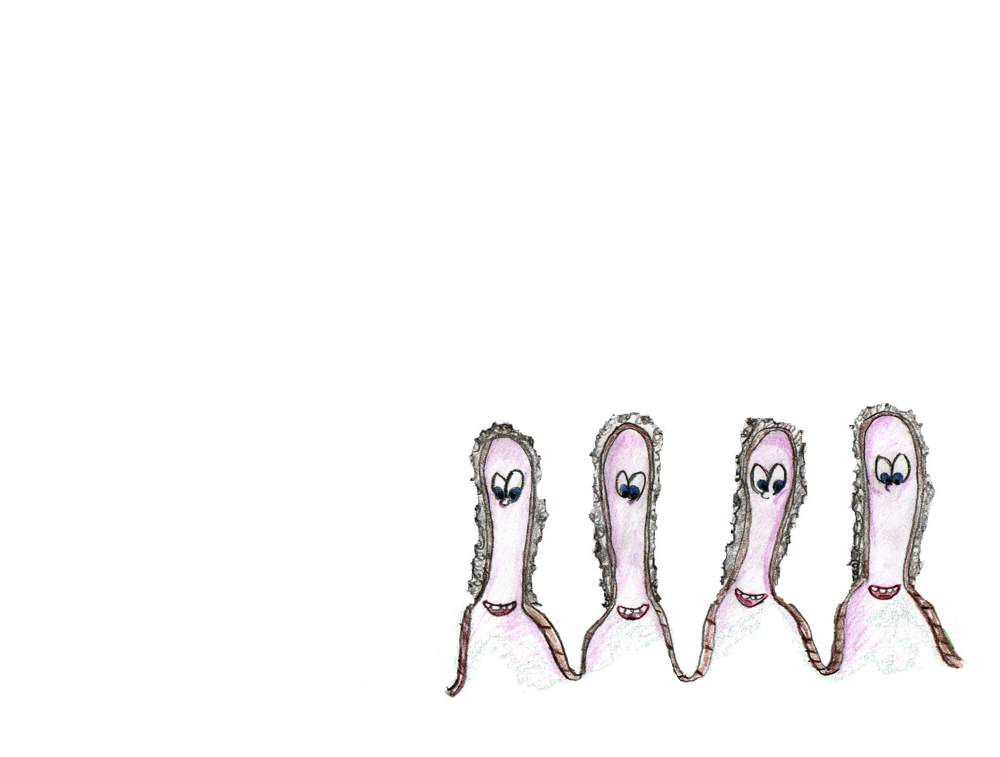
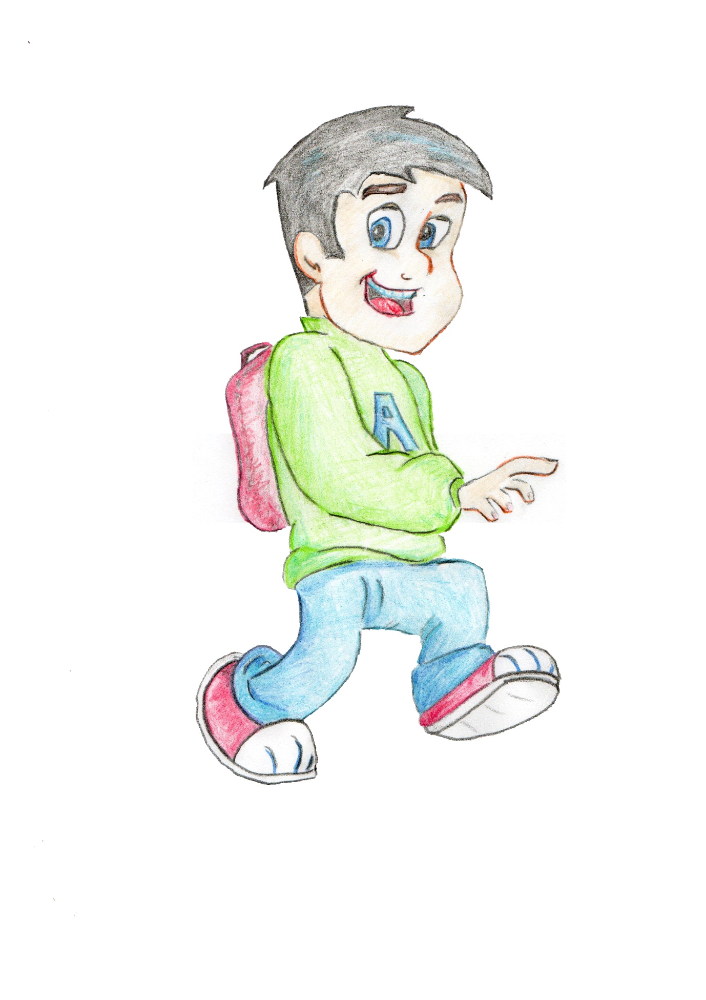
Rossita va a quinto de primaria y cuando sus amigas se encuentran mal y tienen problemas de salud, les anima a que se hagan las pruebas en sangre.
La enfermedad celíaca puede ser muy mala si no se detecta a tiempo, pero es un gran alivio si se diagnostica pronto, ya que haciendo una dieta estricta, volverás a ser el de antes, incluso mejor.
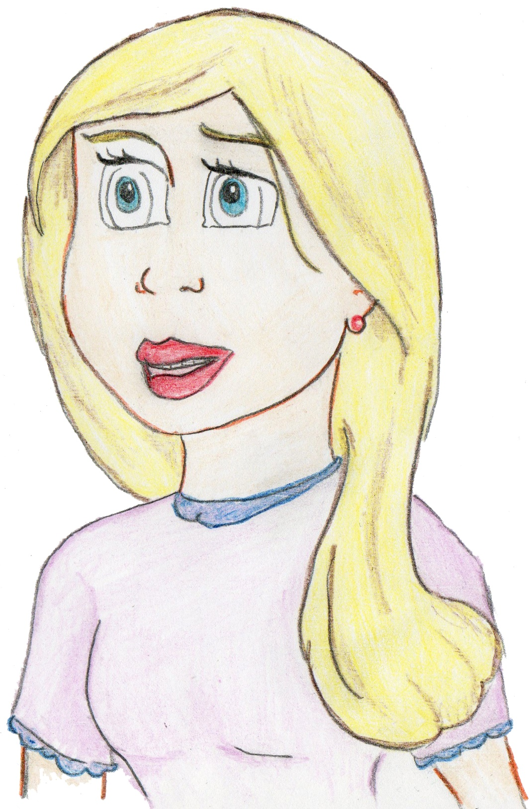
Por cierto, ¡qué maleducado soy, no me presenté!
Soy Andrés, el hermano de Rossita, y no quiero terminar este cuento sin darle las gracias a mi hermana y a mis padres, que siempre están ahí cuando me encuentro mal y me ayudan a poder levantarme.
Y muchas gracias a todos por leer y oír nuestra historia.
¡GRACIAS!